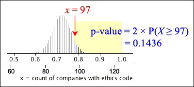

One- and two-tailed tests
In some situations, the alternative hypothesis only allows for probabilities on one side of the null hypothesis value, such as
This is called a one-tailed test. However the alternative hypothesis often allows for parameter values on either side of the null hypothesis value — called a two-tailed test. An example would be
P-value for two-tailed test
A two-tailed test is usually based on the same test statistic that would be used for the corresponding one-tailed test, but values in both tails of its distribution usually give support to the alternative hypothesis.
The p-value is double the smaller tail area of the test statistic, to take account of the fact that values in the opposite tail of the distribution would give equally strong evidence against H0.
Example: Ethics codes in companies
In 1999, The Conference Board surveyed 124 companies and found that 97 had their own ethics codes ("Business Bulletin", Wall Street Journal, Aug 19, 1999). In 1997, it was believed that 72% of companies had ethics codes, so is there any evidence that the proportion has changed?
If H0 is true, the number with an ethics code will be
\[ X \;\;\sim\;\; \BinomDistn(n=124, \pi = 0.72) \]The p-value is found from this distribution,

Getting 97 companies with ethics codes is therefore not unlikely, so we conclude that there is no evidence from these data of a change in the proportion of companies with ethics codes since 1997.